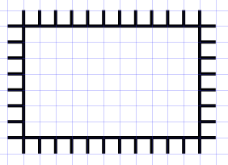
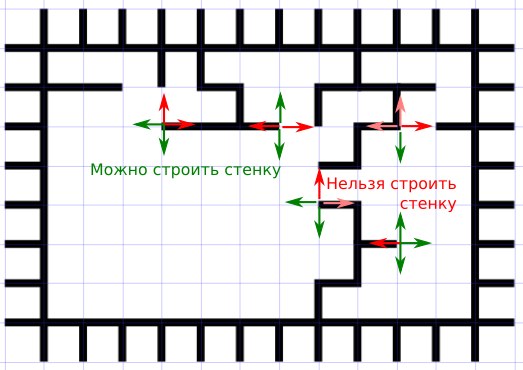

Что такое лабиринт? - Для нас это будут клетки, по которым можно перемещаться, разделённые стенками, через которые пройти нельзя.
Что такое правильный лабиринт? - Это такой лабиринт, в котором между двумя любыми клетками всегда существует единственный путь.
Понятно, что в правильном лабиринте не может быть замкнутых маршрутов, то есть все стенки обязательно связаны друг с другом. Иначе мы сможем двумя способами прийти в одну и ту же клетку, двигаясь кольцевым маршрутом в разных направлениях.
Закольцованных стенок в правильном лабиринте тоже не может быть: иначе какие-то клетки окажутся отрезанными от остального лабиринта, и пройти к ним будет нельзя.
В правильном лабиринте любая клетка может быть "входом", и любая клетка может быть "выходом" - ведь из любой клетки в любую путь единственный. Но мы для определённости будем считать началом лабиринта верхнюю левую клетку, а "выходом" - правую нижнюю.
Пусть нам нужно описать лабиринт шириной m и высотой n клеток. Рассмотрим два способа описания лабиринта.
Первый способ. Нам понадобится двумерный массив (список) m*n, чтобы записать информацию про каждую клетку. Но из каждой клетки может быть четыре выхода в разных направлениях. Так что элементами этого двумерного списка будут списки из 4-х логических элементов, указывающих, можно ли пройти в соседнюю клетку сверху, справа, снизу или слева.
В начальный момент проходов межлу клетками нет. Чтобы создать лабиринт, нам придётся по определённым правилам "прогрызать" проходы в стенках. Другой способ - наоборот, в пустом пространстве лабиринта строить стены. Заметим, что если прорезать во внешней стене "вход", то стены лабиринта (если сделать их толстыми и прорезать внутри сквозные ходы) тоже будкт представлять собой правильный лабиринт.
Второй способ. Рассмотрирм массив узлов, в которых соединяются стенки, разделяющие клетки лабиринта. В лабиринте размером m*n клеток будет (m+1)*(n+1) узлов. Для каждого из узлов придётся задать 4 логических значения, говорящих о том, отходит от него в одном из четырёх направлений стенка, или нет. для определённости пронумеруем направления по часовой стрелке, начиная с направления "вверх": "вверх" - 0, "вправо" - 1, "вниз" - 2, "влево" - 3. Это будут номера элементов списка стенок, выходящих из одного узла. Если стенка есть, элемент равен True, если нет - False (можно и наоборот, главное - не запутаться).
Понятно, что информация про одну и ту же стенку будет записана дважды, поскольку каждая стенка соединяет между собой ровно два узла. Ну и ладно, так удобнее. Надо только не забывать добавлять связывающую стенку к каждому из узлов.
Как правильно задать начальный двумерный массив? - Используйте генератор списков с конструкцией for, например:
points = [[[False, False, False, False] for i in range(m + 1)] for j in range(n + 1)]
Внимание! Выражение типа
a = [[0] * m] * n
приведёт к ошибке! (Какой?)
Сначала попробуем написать программу, которая рисует неслучайный правильный лабиринт, а потом добавим в неё случайность.

В самом начале уже есть стенки по краям лабиринта. Чтобы исключить выход за пределы лабиринта, просто скажем, что из крайних точек наружу стенки уже построены, а потом не будем их рисовать.
A. Создайте трёхмерный список для хранения информации об узлах лабиринта, задайте в нём начальные значения. Вначале все внешние узлы соединены между собой, из них торчат стенки наружу. Все внутренние узлы ни с чем пока не соединены.
В. Создайте список active и внесите в него все точки, от которых можно начинать строительство стен (в начальный момент это все точки внешних стенок, кроме угловых). Точка - это кортеж из двух чисел, добавлять его надо так:
active.append((i, j))

Куда можно строить новую стенку? - Давайте зададим вопрос по-другому: "Куда нельзя?"
1) в сторону узла, который уже соединён с данным узлом стенкой.
2) в сторону узла, из которого уже выходит хотя бы одна стенка (иначе получатся стенки, замкнутые в кольцо, а это нарушит правильность лабиринта).
Чтобы было удобно проверять, строили мы уже в данную точку стенку, или нет, следует создать специальный список (или множество) used, куда записывать все уже задействованные в строительстве стенок точки.
Подумайте: Можно ли объединить списки used и active и использовать один список вместо двух? Есть ли причины, по которым лучше всё-таки использовать два разных списка?
С. Создайте, если нужно, список (множество) used и заполните его начальными значениями. Напишите четыре функции: up(i, j), down(i, j), right(i, j), left(i, j), которые строят стенку из точки с координатами (i, j) соответственно вверх, вниз, вправо или влево. И выдают в ответе True, если стенка построена, и False, если в эту сторону стенку строить нельзя. Какие действия необходимо выполнить программе, чтобы стенка была "построена"?
Как выбирать узел, из которого строить очередную стенку? Новая стенка всегда начинается c узла из списка active. Но мы можем разными способами брать элементы из этого списка: начиная с начала, начиная с конца, из середины, в случайном порядке. Случайную формулу тоже можно задать разными способами.
Выбрав узел, мы можем построить из него сразу все возможные стенки, а можем - только одну, а потом сразу переходить к следующему узлу. Лабиринты при этом получатся немного разные.
Выбрав узел, мы можем по-разному выбирать последовательность направлений, в которых пытаемся строить стенки: например, всегда по часовой стрелке или случайным образом.
D. Напишите программу, которая будет в цикле перебирать по очереди все точки из списка active и строить из каждой все возможные стенки в соседние точки (сам список active в процессе строительства стенок будет увеличиваться). Когда нужно будет остановить строительство?
Напишите функцию, котрая по заданному трёхмерному списку points нарисует построенный лабиринт. Посмотрите на получившуюся картинку.
Если для рисования лабиринта используется модуль tkinter, можно рисовать лабиринт по мере построения. Тогда будет интересно наблюдать за последовательностью действий. Дополнительно можно визуализировать "строителя" - например, перемещать цветной кружок к тому узлу, от которого программа в данный момент пытается строить стенку.
Замечание: Чтобы выполнить подряд несколько функций, удобно предварительно занести их имена в список (без скобок - тогда они не будут выполняться), например:
directions = [up, right, down, left]
Позже можно будет вызывать эти функции в цикле, например:
for f in directions:
f(i, j)
или
for k in range(4):
directions[k](i, j)
E. Напишите программу, которая будет в цикле перебирать в случайном порядке все точки из списка active и строить из каждой все возможные стенки в соседние точки. Нарисуйте получившийся лабиринт.
Чтобы выбирать направления в случайном порядке, можно перемешивать элементы списка с помощью метода random.shuffle(list) (параметр этого метода - список, элементы которого будут перемешаны).
Вычислите время выполнения программы для разных размеров лабиринта. Используйте функцию time.time() (модуль time нужно подгрузить в начале программы).
F. В процессе строительства стенок мы добавляем в список active новые узлы, до которых были достроены стенки. Нужно ли удалять из этого списка какие-то узлы? Измените программу так, чтобы те узлы, из которых уже заведомо нельзя строить стенки, из списка active автоматически удалялись. Как изменится время работы программы?
G. Напишите программу, которая будет в цикле перебирать все точки из списка active и строить из каждой все возможные стенки в соседние точки - на этот раз с конца списка. Сделайте два варианта: когда направления перебираются всегда в одном и том же порядке, и когда порядок выбора направлений случаен. Нарисуйте получившиеся лабиринты.
Н. Наверное, вы заметили, что случайный лабиринт получается какой-то слишком простой. Путь из верхней левой клетки в правую нижнюю проходит близко к диагонали прямоугольника, и его легко проследить взглядом. Попробуйте придумать, как сделать лабиринт более сложным.
I. Пусть лабиринт задаётся не массивом узлов, а массивом клеток, каждая из которых ограничена стенками с четырёх сторон. Напишите программу генерации лабиринта для такого представления данных. Придумайте алгоритм, приводящий к созданию сложных лабиринтов.
J. Напишите функцию, которая записывает созданный лабиринт в текстовый файл. Придумайте формат такого файла, удобный для записи и для чтения. Напишите вторую функцию, которая прочитывает данные из файла и рисует по ним лабиринт. Можно использовать модуль PIL, чтобы нарисовать растровую картинку и сразу сохранить её на диск.
K. В лабиринт можно добавить "запрещённые области", в которые звходить нельзя. Или, наоборот, больште "залы" из нескольких клеток, в которые ведут много коридоров. Подумайте, как сделать такие лабиринты, и какое представление данных будет удобней использовать.